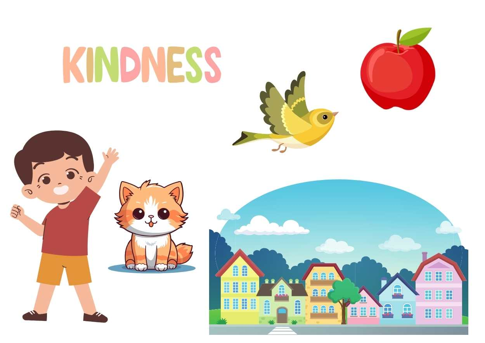

Nouns are words that name people, places, things, or
ideas. They help us identify and refer to specific
entities in our language.
A list of nouns commonly used is:
● Animal: Cat
● Place: Park
● Thing: Bicycle
● Person: Girl